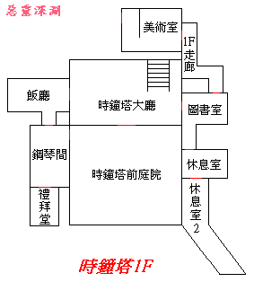
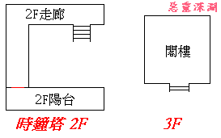
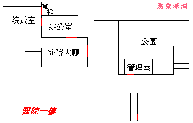
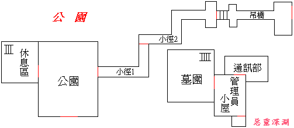
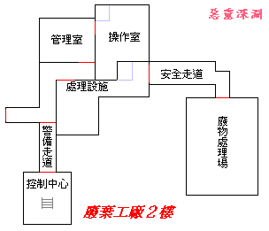
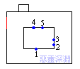
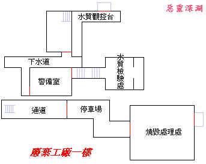

|
惡靈古堡３-----地圖攻略─時鐘塔∼結局
|
以下的攻略可以取得所有的File，標綠色的道具是重要道具，一定要取。有些道具
是隨機出現的，有些則是Heavy or Easy模式才有的。
|
火車啟動不久就發生事故，Jill必須回到上一個車廂檢視，原來是追跡者跑進來了，此時Jill可以直接掉 頭走掉，無論如何都會是Mikhail和追跡者同歸於盡的結局，事件結束後發生分歧： （1.緊急煞車─往前院 2.跳出窗外─往休息室２ time over.往前院） |

|
往前院──前院角落有綠色藥草× ２、藍色藥草× ３，要小心烏鴉攻擊。 打開鋼琴間的門，進入禮拜堂，櫃子裡有時鐘塔之鑰，隨機彈藥粉。 使用時鐘塔之鑰進入飯廳，和 Carlos 碰面。 時鐘塔大廳有藍色藥草盆，屍體上有炸彈發射器、作戰指示書，桌上有時鐘塔地圖 、急救 噴霧，樓梯 旁有一個壞掉的音樂盒，音樂全是錯的，不用理它。 進入圖書室，裡側桌上有美術品的明信片，外側桌上有榴彈。 經休息室往休息室２，桌上有彈藥粉，往裡面走，牆上的畫會掉落，調查後得到時鐘塔之 鑰２。 往休息室２─桌上有彈藥粉，調查牆上的畫得到時鐘塔之鑰２。 進入圖書室，和 Carlos 碰面，得到冷凍彈，裡側桌上有美術品的明信片。 時鐘塔大廳有藍色藥草盆，屍體上有炸彈發射器、作戰指示書，桌上有地圖 、急救噴霧 ，樓梯旁有 一個壞掉的音樂盒，音樂全是錯的，不用理它。 經過飯廳、鋼琴間到禮拜堂，櫃子裡有時鐘塔之鑰，隨機彈藥粉。 |

|
從大廳的樓梯上２樓，往２樓陽台，中央處有一孔穴，使用時鐘塔之鑰２後放下爬梯，上３樓閣樓。 左手邊的機關是考驗玩家的音感，應該滿簡單的，完成後調查得到首飾，與時鐘塔之鑰組合，右手邊 的櫃上有銀齒輪、隨機彈藥粉，打字機旁有色帶，裡側櫃子上有炸彈發射器子彈。回２樓陽台和追跡 者狹路相逢，出現分歧： （1.使用強光照射 2.使用電流 time over.與追跡者決鬥） 選擇１會將追跡者推下陽台，２則只是暫時將牠電昏，但是可以拿到獎勵。 順原路回到１樓圖書室，使用組合過的時鐘塔之鑰，經１樓走廊到美術室，屍體上有傭兵手記，３個 石像上取得水晶、黑曜石、琥珀，裡面桌上有 炸彈發射器子彈。 房內由左至右過去、現代、未來三幅畫，必須裝上適當礦石讓中間時鐘的指針指向１２，如果時鐘原 為５點，則依序裝上水晶、黑曜、琥珀；原為７點則裝上黑曜、水晶、琥珀；原為９點則裝上黑曜、 琥珀、水晶。成功後在時鐘後方得到金齒輪。 將金、銀齒輪結合，在３樓閣樓裡側的機關使用，時鐘塔開始敲鐘，離開前整理裝備，準備和追跡者 一決死戰。 如果之前在火車的分歧選擇緊急煞車或者讓時間到，在此 Carlos 就會出現摧毀追跡者的火箭砲；反之 就必須和持有火箭砲的追跡者對決 ，建議以Heavy模式遊戲的玩家至少攜帶2~3份回復藥，請不要吝嗇 的拿出最 好的武器，因為這是遊戲中唯一強制必須打贏追跡者但是卻沒有任何協助的戰鬥。 Jill勝利後因為中毒而昏迷，角色切換至Carlos。 |

|
Carlos 由Jill走過的路來到美術室，推開擋在後門門前的大鐘， 出巷弄後往左，進入醫院大廳，正當要 前往辦公室時，突然蹦出兩隻獵人，可以選擇不打，如果打了，可以在牠們出現的地方拿到紅色藥草 ×２（Carlos的道具不可移交給Jill）。 辦公室桌上有色帶，櫃子上有急救噴霧。 一進院長室門邊有藍色藥草，倒臥沙發的屍體旁有醫院院長的手記，鐵櫃裡有手槍子彈，牆上有地圖 ，院長桌上有錄音機。將錄音機拿至電梯旁使用，電梯打開了。 可以選擇先上 B3F或者4F ，這個選擇會影響到劇情，這兩層樓都有安排劇情，不過只有先選擇的樓層 可以看到，有興趣的玩家可以存檔兩個都試試（如果想拿到Jill的日記就必須先去4F）。 |

|
B3F── 經過走道進入實驗辦公室，櫃子上有手槍子彈，隨機綠色藥草，接著進入實驗室，櫃子裡有 培養液，桌上有醫療機械手冊，將裡端的機器電源打開，使用培養液，調整依序為下右下下 右，得到試管培養液。出去時小心獵人攻擊，完成後前往4F。 4F── 先前往資料室，裡側桌上有照片Ｄ、病房鑰匙，到手後先進入病房１，裡面有隨機綠色藥 草，注意這個房間的四角，有一個置物櫃擺在哪一角，調查門口屍體，得到一組密碼。 打開病房２，在床旁邊也有一個置物櫃，玩家可以推動它，如果病房１的置物櫃放在進門右 手邊，那麼就把病房２的推到進門左手邊，依此類推。失敗的會被電擊，只要離開病房再進 去就可以重新推過。成功後牆上露出一保險箱，輸入在屍體上找到的密碼，得藥劑，將之與 試管培養液組合。 得到疫苗後離開醫院，在一樓的時候會遇到限時爆破，馬上跑出醫院就行了。回去找Jill的路上，會 在 時鐘塔大廳碰上追跡者，Carlos 是無法打敗牠的，最多只能將牠打昏一陣子，不要浪費時間，轉身快 跑吧！ 角色切換回Jill，整理裝備帶上鐵絲，出門和追跡者搏鬥，這是最後一次遇到有獎品的追跡者了，踏著 Carlos 剛走過的路途出時鐘塔，使用鐵絲打開公園管理室的門，桌上有照片Ｅ、色帶 、炸彈發射器子 彈，櫃子上有炸彈發射器子彈，牆上有公園鑰匙。 |

|
用公園鑰匙打開公園的門，往右側小徑，在小徑２上的屍體找到給監視員的命令、公園鑰匙２。 使用公園鑰匙２打開休息區的門，一進門就可以看到地圖，裡面有綠色藥草× ３、藍色藥草× ２，此處 有一機關，板子上的答案全是錯的，正確答案在水池中。 方法： |
|
調整完後水池的水都消退了，由水池中的梯子往下爬，經過下水道後從另一個梯子爬上墓園，墓園正 中央有紅色藥草，小心土裡爬出來的殭屍，打開管理員小屋。 桌上有隨機彈藥粉，櫃子有鐵棍，裡頭的小隔間有急救噴霧，將打火機取出，在小屋壁爐前使用，接 著再使用鐵棍，就可以進入通訊部。 櫃子上有榴彈，桌上有監視員的報告書，黑板上有作戰總部的傳真，最重要的是閃閃發亮的公園鑰匙 ３。離開時接到訊息。 才剛爬出壁爐就碰上 Nicholai ，在此整理好裝備，準備對抗墓地巨蟲， 可以把榴彈槍剩下的彈藥拿出 來用，離開管理員的小屋沒多遠即進入戰鬥，勝利後從掉下的梯子上去，經下水道再由另一個梯子上 去，回到公園休息區。 再度回到小徑２，裡頭門旁的屍體上有軍用手槍子彈，打開門來到吊橋，再次碰上追跡者： （1.將牠推落 2.跳下吊橋 time over.被擊落吊橋） |

|
選擇１繼續往前走到廢棄工廠２樓（其他到廢棄工廠一樓），這裡的選擇會影響結局，玩家可以都試 試。 先到2F──先進入管理室，打字機旁有色帶、工廠管理者的日記，辦公桌上有隨機彈藥粉，櫃子裡有 處理設施的鑰匙、急救噴霧。接著由旁邊小門到操作室，門旁藍色藥草× ２，解除機關的 方法如下：
 １─２─３─１─４─５─１─３─啟動─３─２─１─出去 完成後前往處理設施，在桌上找到 MO 磁片，角落有綠色藥草× ３，搭乘電梯往１樓。 |

|
來到水質觀控台，小架子上有隨機散彈。經下水道往警備室，打字機旁的文件是廢棄處 理廠手冊，閃著藍光處找到處理試管。 往下到水質檢驗處，桌上隨機彈藥粉，鐵櫃上有急救噴霧，將處理試管放上水質檢驗的 機器，這機器的調法是ＡＢＣ加在一起等於最上面的圖樣，成功後就可以打開２樓往安 全走道的門了。若是想拿火箭砲，就把處理設施的鑰匙插入旁邊的機器的鑰匙孔，得到 處理設施的鑰匙２。 回到２樓進入安全走道，碰到 Nicholai ，在廢棄處理場門口使用MO 磁片，在裡面碰上追 跡者，時間內把牠打敗，附近有多腐蝕性液體出口可使用，勝利後尋找紅色磁卡，在門 旁使用。 先到1F──經過一小段路抵達下水道，與 Carlos 會面，進入警備室，打字機旁有文件廢氣處理廠手冊 ，閃著藍光處找到處理試管。 往下到水質檢驗處，桌上隨機彈藥粉，鐵櫃上有急救噴霧，將處理試管放上水質檢驗的機 器，這機器的調法是ＡＢＣ加在一起等於最上面的圖樣，完成後重回下水道，經水質觀控 台搭電梯往２樓。 來到處理設施，在桌上找到 MO 磁片，角落有綠色藥草× ３，出去時碰到 Nicholai ，接著進 入管理室。 打字機旁有色帶、工廠管理者的日記，辦公桌上有隨機彈藥粉，櫃子裡有處理設施的鑰匙 （在先到１樓的分歧中這不是重要道具，而是得到火箭砲的關鍵道具，將此道具拿置１樓 水質檢驗插入旁邊的機器的鑰匙孔，得到處理設施的鑰匙２）。接著由旁邊小門到操作 室，門旁藍色藥草× ２，解除機關的方法如下：
１─２─３─１─４─５─１─３─啟動─３─２─１─出去 通往安全走道的門打開了，在廢棄處理場門口使用 MO 磁片，在裡面碰上追跡者，時間內 把牠打敗，附近有多腐蝕性液體出口可使用，勝利後尋找紅色磁卡，在門旁使用。 出來後聽到緊急撤離的廣播，如果之前拿到了處理設施的鑰匙２，可以在２樓操作室電梯使用紅色磁 卡，下去後在保險櫃使用處理設施的鑰匙２，就可以拿到火箭砲，另外升降梯附近也有榴彈可拿。在 ２樓大門走道的鐵捲門旁使用紅色磁卡，警備走道上有綠色藥草× ２，控制中心因前面分歧不同出現 不同劇情，只有之前在進入工廠時吊橋上選擇跳下吊橋、時間到被擊落這兩種，會在控制中心遇到生 存選擇： （1.與Nicholai通話 2.和直昇機對戰 time over.和直昇機對戰） 劇情結束後可在進來的門旁櫃子找到軍用手槍子彈。 在控制中心拿到受信機準備往下時，接收到攻擊確認的指示，此時右上角的受信機出現紅點，時間亦 開始到數計時。下至１樓的通道，樓梯旁有燒毀處理工廠手冊，櫃子上有散彈。在停車場的路上有最 後一份文件極密照片檔案（如果有依順序取得所有File，並且是Heavy模式，Jill的日記會取代藍色遊戲 手冊的位置）。 調查燒毀處理場裡面的控制螢幕，使三個電源都開啟，然後將編號１的電源推入，追跡者的最終型態 出現了，玩家無論持有多好的武器都打不贏牠，趕快去將編號２、３的電源推入，啟動秘密武器，啟 動後會不斷直線攻擊，直到追跡者死亡，Jill被打到並不會受傷，玩家只要引誘牠的位置即可。 趕快從角落的門離開，沒想到離開前追跡者又動了起來： （1.使用一旁軍用手槍追擊 2.無視並逃離 time over.中毒後自行移動） 開啟電梯後就準備迎接Ending，動畫因前面分歧不同而不同，其中有一個可以看到Jill在 S.T.A.R.S 的夥 伴喔！猜不出來嗎，趕快去惡靈１的人物介紹找一找。 （未經同意禁止轉載連結） |
惡靈深淵Biohazard Abyss http://98.to/coolbio